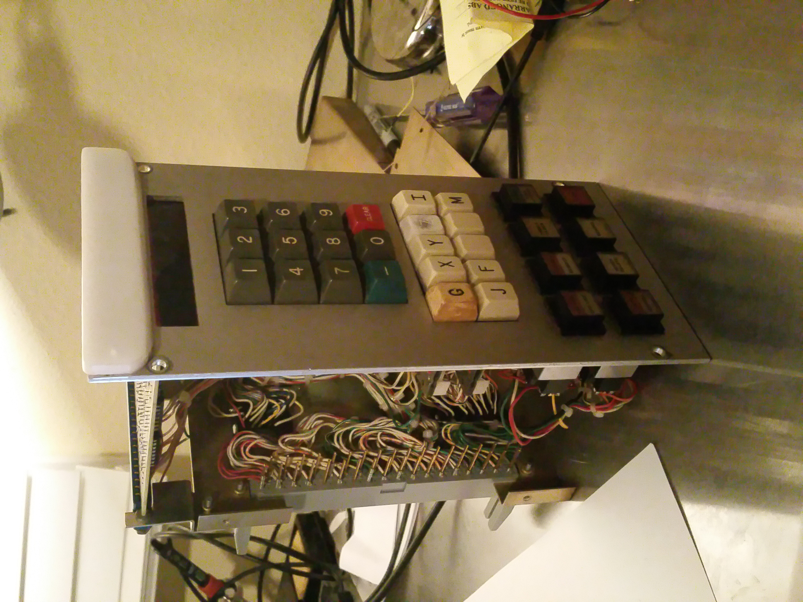

Tristan Thompson's webpage.
I am a computer science freshman at Oregon State University
My good qualities
- I can program! I can program so well that I got an internship at Mentor Graphics In the summer of my Junior year. I then got hired and worked as a contractor the following year and over the summer. I also took an independent study my Junior year where I made a vector adder and toyed around with making an arduino blink a light.
- The programming languages I know in order of proficiency are:
- Java
- Java Script
- C#
- Labview
- C++
- x86 Assembly
- AVR Assembly
- I can light! I was the lead lighting designer, setup, and board operator for The Lakeridge Drama Program.
- I can do robotics! My interest in programming really developed when I joined robotics in the 9th grade. It's also where I got my internship from. I became software lead in Sophomore year, Project Manager and lead Robot Driver in Junior Year, and Team Captain in Senior year.
- I have a reference! You can see it here.
My projects/extras
I did a small interpreter/language project that I call Alpha. It's a semi-esoteric language that I based around the language in a game called TIS-100, a game that uses an assembler-like language. You can see a list of registers and commands here.
I type primarily in Devorak. This is a blessing and a curse.
Right now I'm reverse engineering a mill control panel. I've kept the wire harnesses intact. It's taught me a lot about how keypads work.

The panel.
I like collecting old hardware. I've collected lots of things over the years, including a working macintosh plus (I had to resolder the analog board at one point though), and a Commodore 64 with an original monitor, tape drive, modem, and two floppy drives.